Що нового
Сучасні дослідження та зміни у розумінні аутизму.
Один день про сучасне розуміння аутизму, доказові підходи та практичний досвід. Для фахівців, які працюють із людьми у спектрі, і батьків, які хочуть краще орієнтуватися в підходах до підтримки своєї дитини.
Нові дослідження доповнюють наше розуміння аутизму, а досвід фахівців показує, як ці знання застосовуються в реальних ситуаціях.
ТАКІ збирає в одному просторі сучасні знання, доказові підходи та практичний досвід тих, хто щодня працює з людьми у спектрі аутизму. Щоб фахівці й батьки могли краще орієнтуватися в інформації, підходах і можливостях підтримки.
Сучасні дослідження та зміни у розумінні аутизму.
Доказові підходи та досвід фахівців-практиків.
Реальні кейси, практичні інструменти та розбір конкретних ситуацій.
Конференція ТАКІ об’єднує фахівців і батьків, які хочуть краще розуміти аутизм, орієнтуватися в сучасних підходах і приймати більш обґрунтовані рішення у реальних ситуаціях.
Що нового ми знаємо про аутизм і як змінюються підходи до підтримки людей у спектрі.
Методи та практики, за якими стоять дослідження, а не лише звичка чи особистий досвід.
Алгоритми, техніки та матеріали, які фахівці можуть використовувати у роботі, а батьки — краще розуміти й обговорювати зі спеціалістами.
Ситуації, з якими фахівці та батьки стикаються щодня, та досвід роботи з ними.
Можливість запитати про те, що важливо саме вам, уточнити почуте та розібрати складні ситуації.
Спілкування з фахівцями та батьками з різних міст України, знайомства й обмін досвідом.
на аутизм і сучасні підходи до підтримки.
Фахівці з різних напрямів, які щодня працюють із дітьми у спектрі аутизму та їхніми родинами. Сучасні знання, практичний досвід і реальні кейси.
Різний досвід. Спільна мета.Дитяча психіатриня та педіатриня
МЦ Медіальт (Львів), Генетична клініка Дмитра Микитенка (Київ).
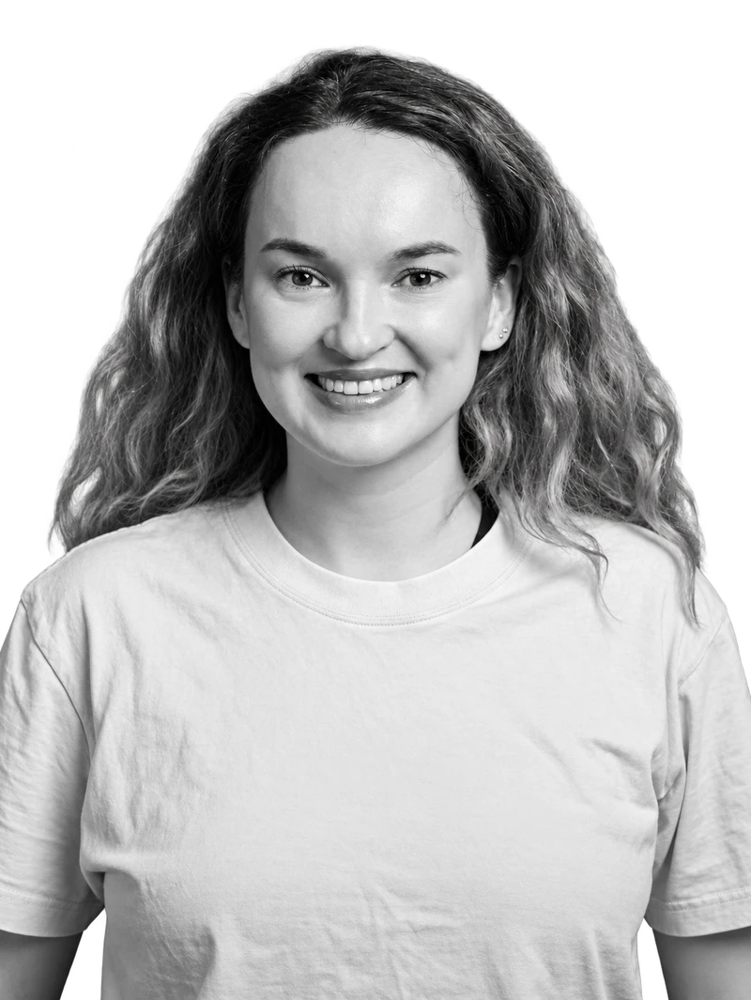
Поведінкова аналітикиня BCBA, IBA
Терапістка та коуч батьків в ESDM, співзасновниця освітньої платформи «Зірочка».
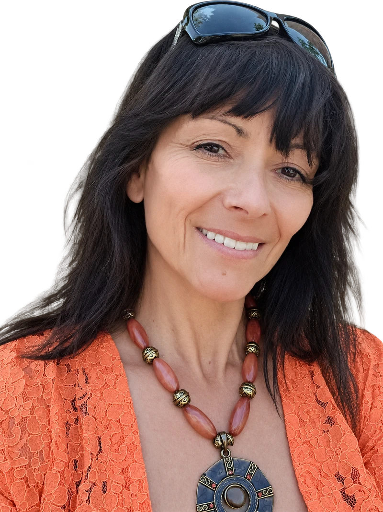
Психологиня, кураторка АВА-програм
Спеціалістка з прикладного аналізу поведінки, співавторка та лекторка курсу «Супровід дитини з аутизмом в інклюзії».
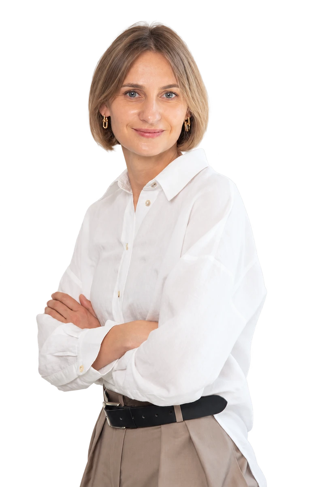
Логопединя, соціальна психологиня та поведінкова аналітикиня
Методистка хабів Levchyk Spectrum Hub.
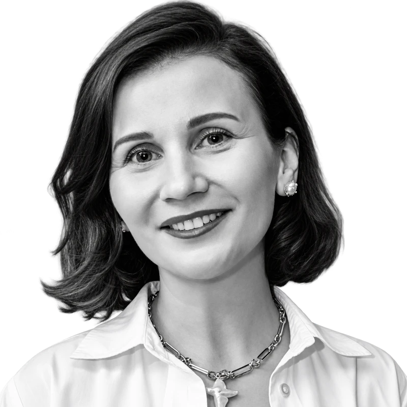
Поведінкова аналітикиня IBA, логопединя
Виконавча директорка Української асоціації поведінкових аналітиків.
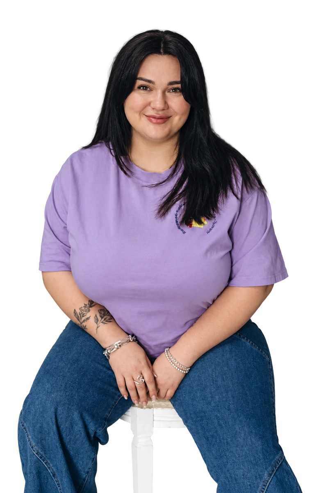
Логопединя, корекційна педагогиня
Власниця мережі логопедично-корекційних центрів О. Зінченко, співзасновниця Асоціації Логопедів України.
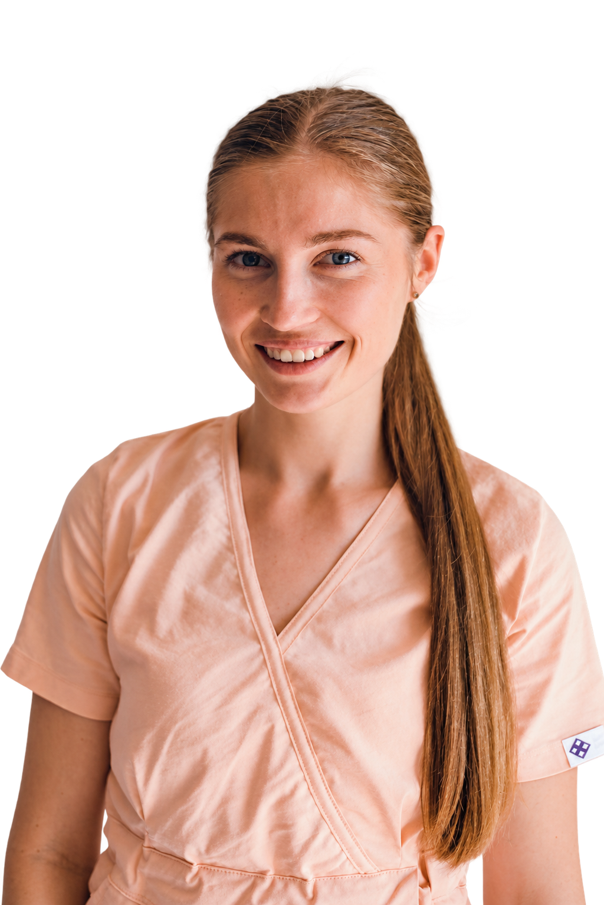
Ерготерапевтка ДМЦ «Бадді»
Викладачка НУФВСУ, член УТЕТ/WFOT. Сертифікована спеціалістка в підході ASI.
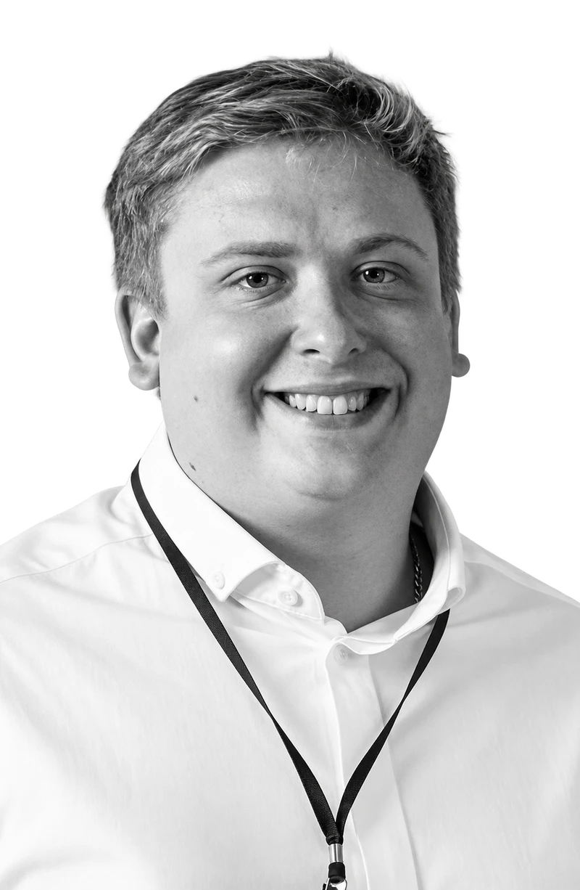
Соціальний підприємець, лікувальний педагог
Засновник платформи Good People, активіст.
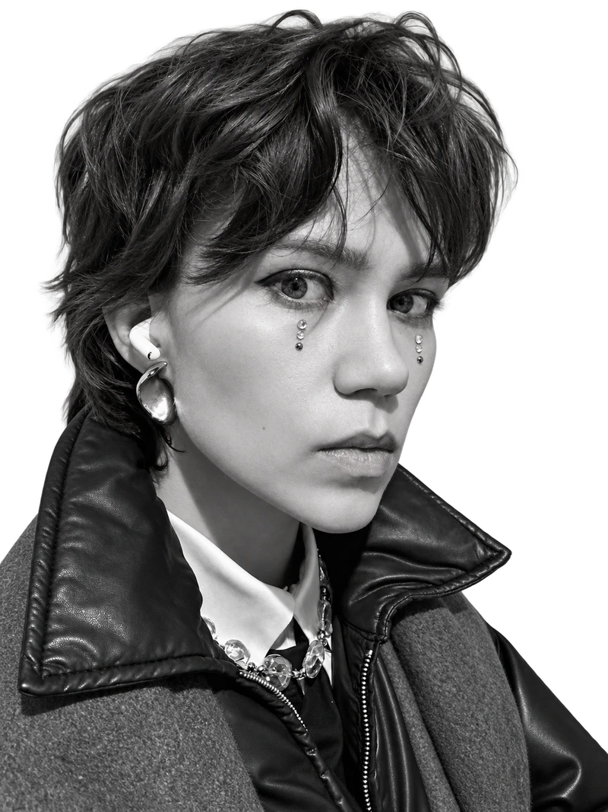
Аутична самоадвокатка, публічна просвітниця, лекторка
Керівниця ГО «Спитай аутиста» та Facebook-спільнот «Спитай аутиста» і «Аутизм по-дорослому».
Експертні лекції, практичні воркшопи та живе спілкування. Щоб розібратися в сучасних підходах, поставити свої запитання та побачити, як знання застосовуються в реальних ситуаціях.
Детальну програму та послідовність виступів опублікуємо незабаром.
Придбати квиток17 жовтня · 10:00
Київ, АртПричал
Один день, щоб краще розібратися в сучасних підходах, поставити свої запитання і зрозуміти, на що спиратися далі.
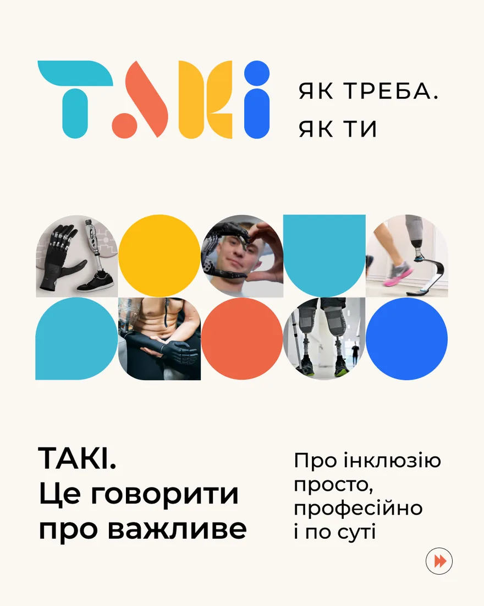
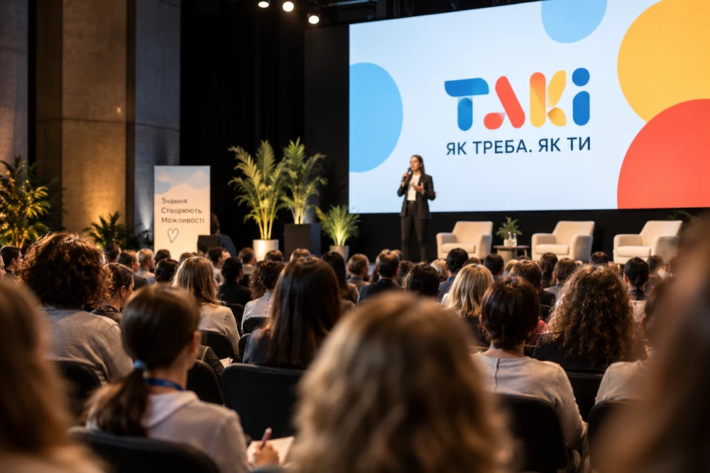
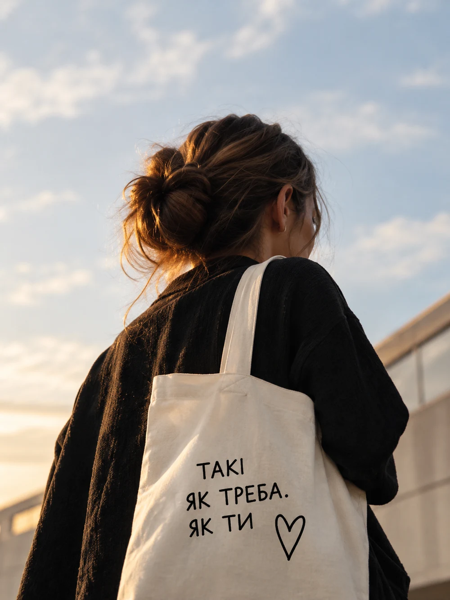
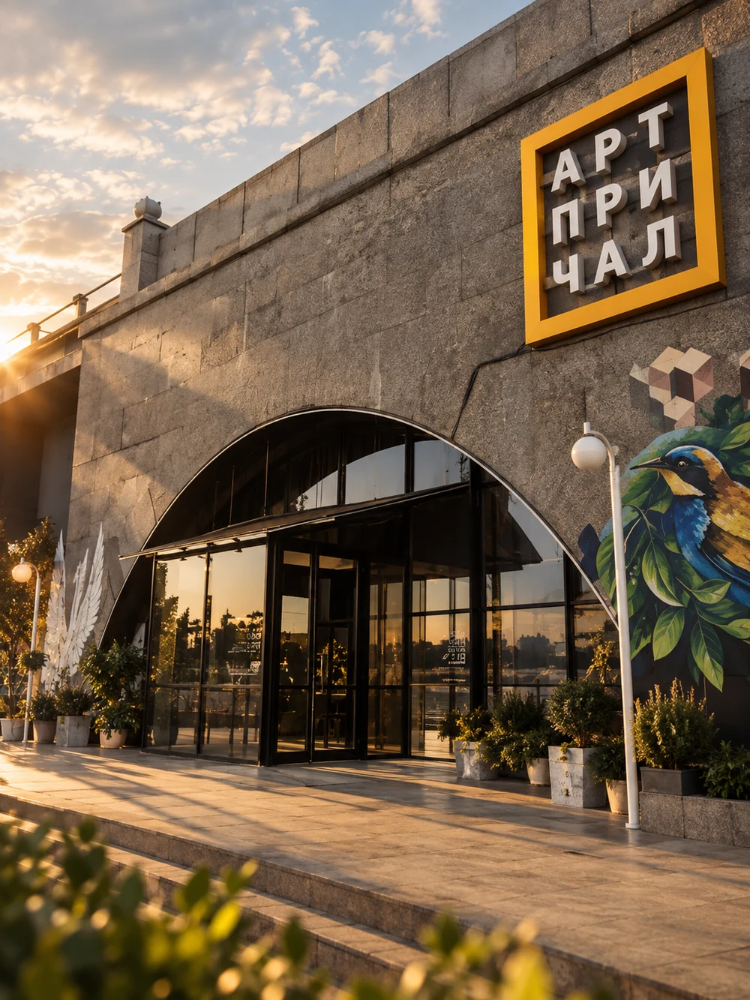
Освітня платформа ТАКІ виникла з бажання знайти відповіді, відкритості до нових знань та любові до людей і своєї справи. Наша мета проста: знання мають потрапити до тих, кому вони потрібні — фахівців, батьків, освітян і соціально відповідального бізнесу.
17 жовтня ТАКІ збере в одному просторі фахівців, освітян і батьків дітей у спектрі аутизму.
Це день не лише про виступи. Між лекціями буде час поставити запитання спікерам, познайомитися з іншими учасниками, обговорити досвід і продовжити розмову наживо.
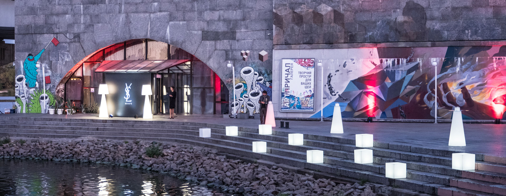
Для батьків дітей у спектрі аутизму та фахівців, які працюють із ними: психологів, терапевтів, логопедів, освітян, тьюторів, реабілітологів та інших спеціалістів.
Конференція відбудеться наживо 17 жовтня 2026 року в Києві, в АртПричалі. Щоб придбати квиток, зв’яжіться з командою ТАКІ.
Виступи 9 спікерів-практиків, сучасні підходи, реальні кейси, практичні інструменти та можливість поставити запитання спікерам.
Так. Конференція створена і для фахівців, і для батьків. Вона допоможе краще орієнтуватися в сучасних підходах до навчання та підтримки дітей у спектрі, розуміти, на що вони спираються, і ставити більш конкретні запитання фахівцям, які працюють із вашою дитиною.
17 жовтня 2026 року, початок о 10:00. Київ, АртПричал.
Інформація щодо запису уточнюється. Зверніться до команди ТАКІ, щоб дізнатися актуальні умови.
Напишіть команді ТАКІ в Instagram або Telegram. Відповімо на запитання про програму, участь та реєстрацію.